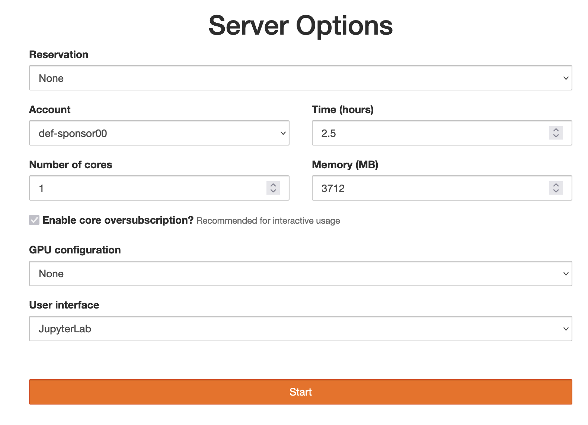

Setup and running Jupyter notebooks
These notes started number of years ago from the official SWC lesson but then evolved quite a bit to include other topics.
Why Python?
Python is a free, open-source programming language first developed in the late 1980s and 90s that became really popular for scientific computing in the past 15 years. With Python in a few minutes you can: - analyze thousands of texts, - process tables with billions of records, - manipulate thousands of images, - restructure and process data any way you want.
Python vs. Excel
- Unlike Excel, Python can read any type of data, both structured and unstructured.
- Python is free and open-source, so no artificial limitations on where/how you run it.
- Python works on all platforms: Windows, Mac, Linux, Android, etc.
- Data manipulation is much easier in Python. There are hundreds of data processing, machine learning, and visualization libraries.
- Python can handle much larger amounts of data: limited not by Python, but by your available computing resources. In addition, Python can run at scale (in parallel) on larger systems.
- Python is more reproducible (rerun / modify the script).
Python vs. other programming languages
| Python pros | Python cons |
|---|---|
| elegant scripting language | slow (interpreted, dynamically typed) |
| easy to write and read code | uses indentation for code blocks |
| powerful, compact constructs for many tasks | |
| very popular across all fields | |
| huge number of external libraries |
Installing Python locally
Today we’ll be running Python in the cloud, so you can skip this section. I am listing these options in case you want to install Python on your computer after the workshop.
Option 1: Install Python from https://www.python.org/downloads making sure to check the option “Add Python to PATH” during the installation.
Option 2: Install Python and the packages via Anaconda from https://www.anaconda.com/download.
Option 3: Install Python via your favourite package manager, e.g. in MacOS – assuming you have Homebrew installed – run the command brew install python.
Post-installation: Install 3rd-party Python packages in the Command Prompt / terminal via pip install <packageName>, e.g. to be able to run Python inside a Jupyter Notebook run pip install jupyter.
Starting Python
There are many ways to run Python commands:
- from a Unix shell you can start a Python shell and type commands there,
- you can launch Python scripts saved in plain text *.py files,
- you can execute Python cells inside Jupyter notebooks; the code is stored inside JSON files, displayed as HTML
Today’s setup
Today we’ll be using JupyterHub on our training cluster. Point your browser to https://hss.c3.ca and log in with your username and password, then launch a JupyterHub server with time = 2.5 hours, 1 CPU core, memory = 3712 MB, GPU configuration = None, user interface = JupyterLab. Finally, start a new Python 3 notebook.

After you log in, in the dashboard start a new Python 3 notebook.